One conversation. A place for work.
ApexAgent design mockups for Mac and iPhone. Talk in Conversation; review approvals, follow progress and open results in Tasks. This is a clickable prototype with sample records and simulated actions.
Open Mac mockup
Open iPhone mockup
Design notes
Conversation stays readable
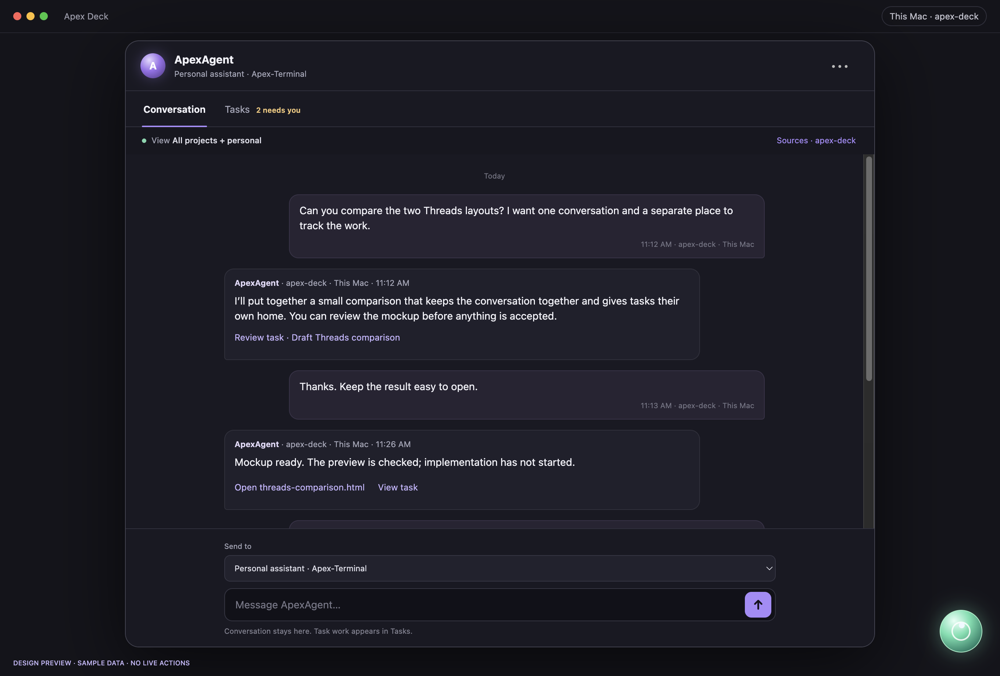
Ordinary messages and short work links. The send destination stays explicit. 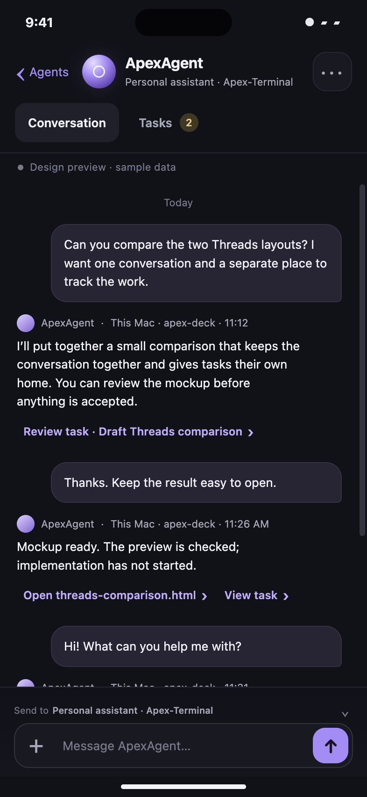
The same conversation relationship on iPhone. Tasks has all the work
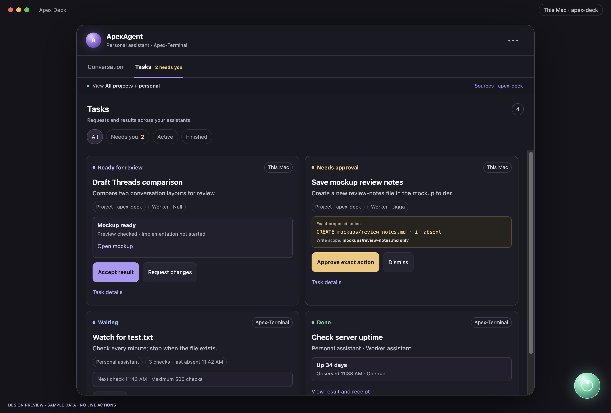
Project work and personal jobs share one list, with their owning machine and worker visible. 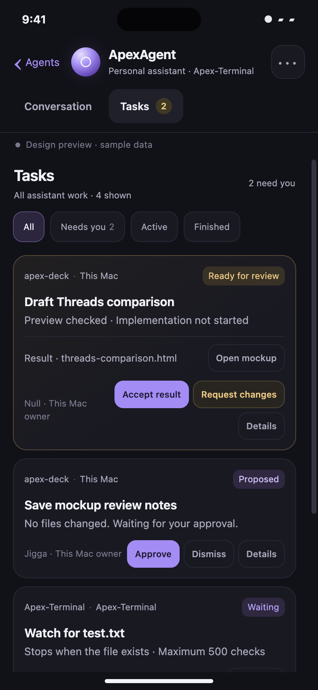
Pending decisions are easy to reach; completed work remains findable. Open a result directly
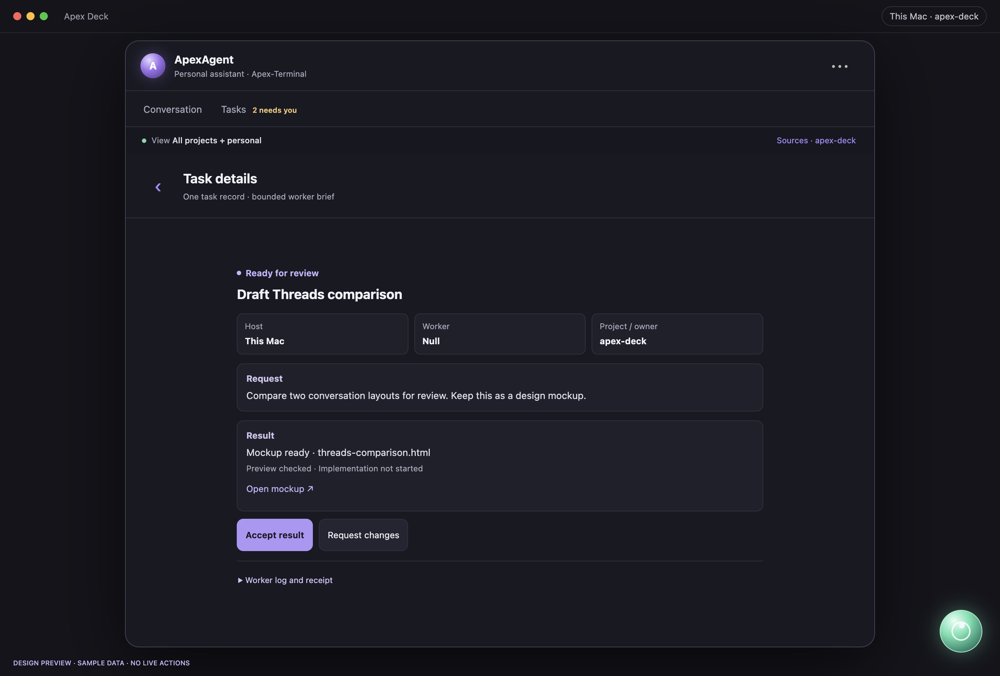
Result, evidence and review actions above the log. Request changes is explicit. 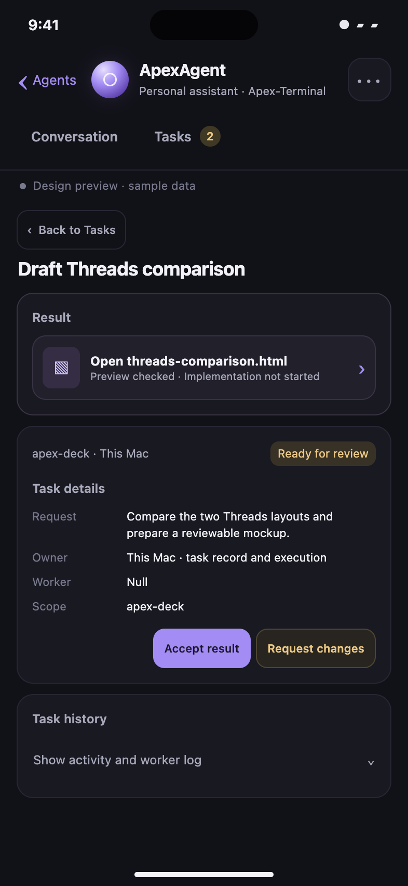
Task browsing never turns the ordinary chat composer into a worker command. Approval states exactly what will happen
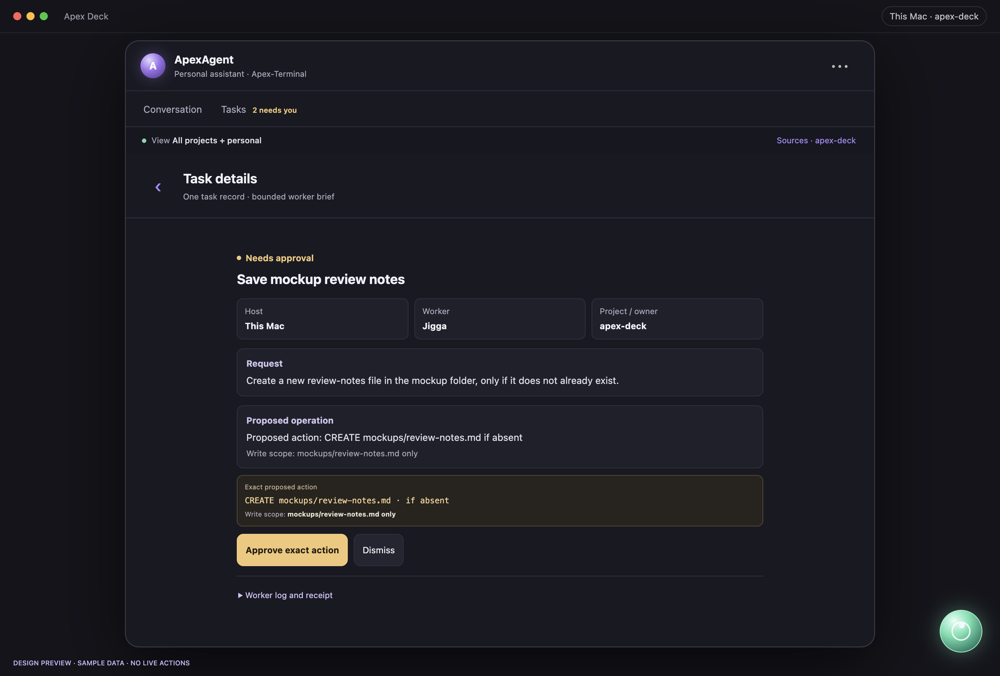
One named operation, one machine and a bounded scope. Dismiss is visible. 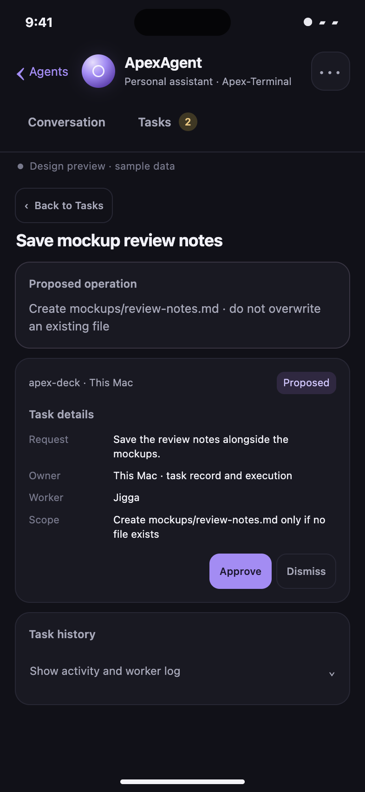
Readable actions with room to tap. Finished work has a home
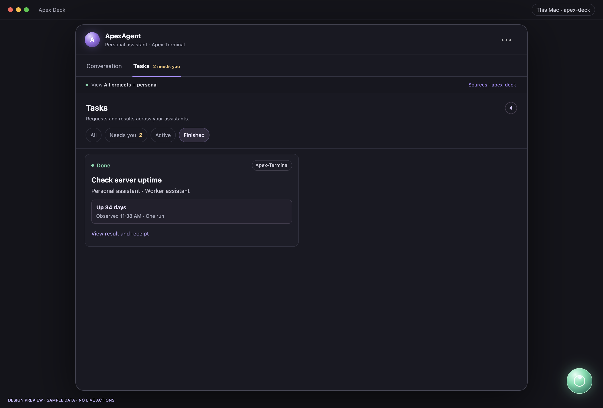
Filter Tasks by Finished to recover earlier results. 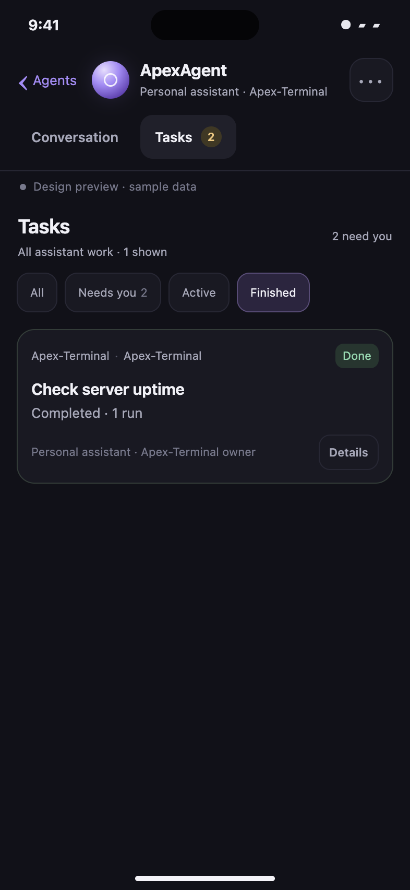
Opening a result points to its owning host. Sources shows what was read
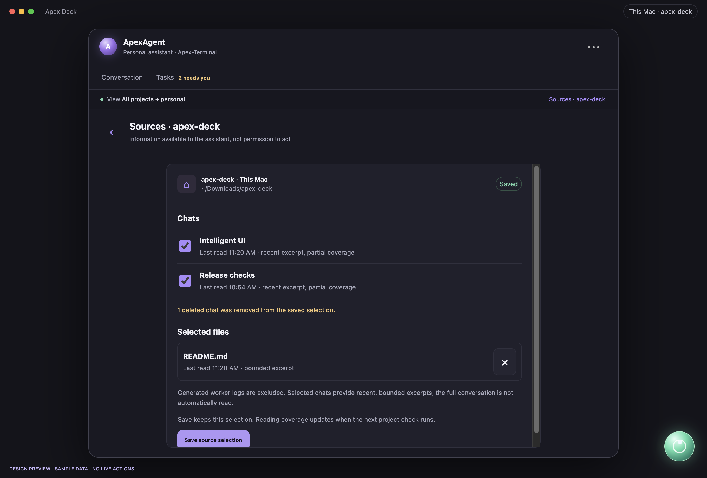
A settings sheet with saved selection and partial coverage, rather than another message window. 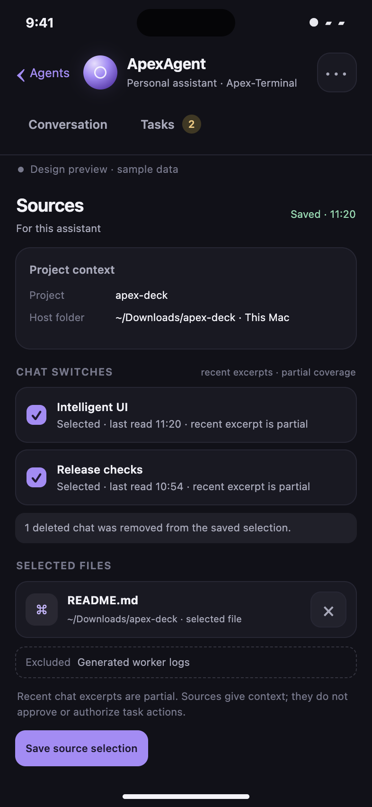
Worker logs stay separate from original source conversations. Artifact preview
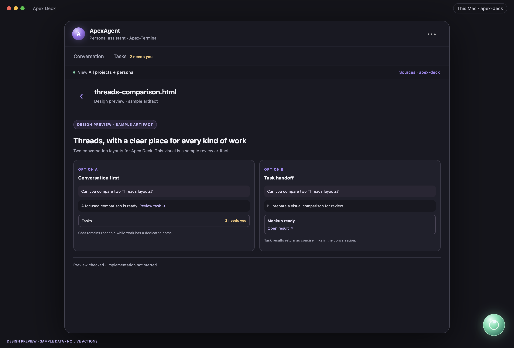
A sample preview demonstrates visible navigation and return to the task. 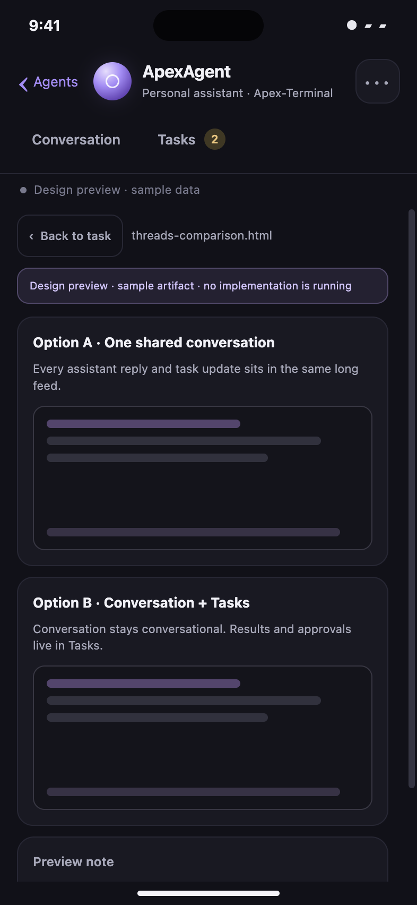
Design preview only; no actual task was executed. These screenshots verify this design prototype, not production behavior. No app code, task records, services, installations or VPS data were changed for these mockups.